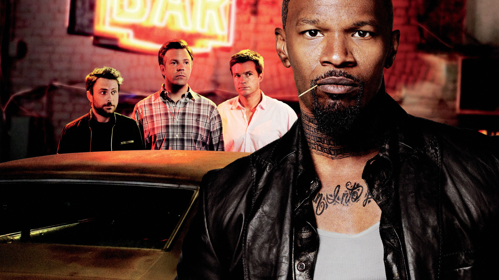

Quiero Matar a mi Jefe 289% de coincidencia 1 h 59 minDespués de que un inversionista sombrío les roba su nueva compañía, Nick, Dale y Kurt conspiran para secuestrar al hijo adulto del hombre y piden un rescate para recuperar el control.REPRODUCIRTRAILERProtagonistas: Jennifer Aninston, Jason Bateman, Mell Harry. Genero: Comedia.
 REPRODUCIR
TRAILER
REPRODUCIR
TRAILER